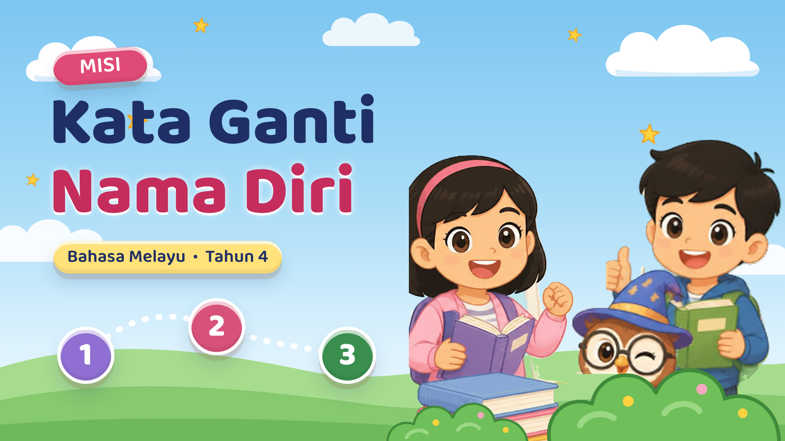
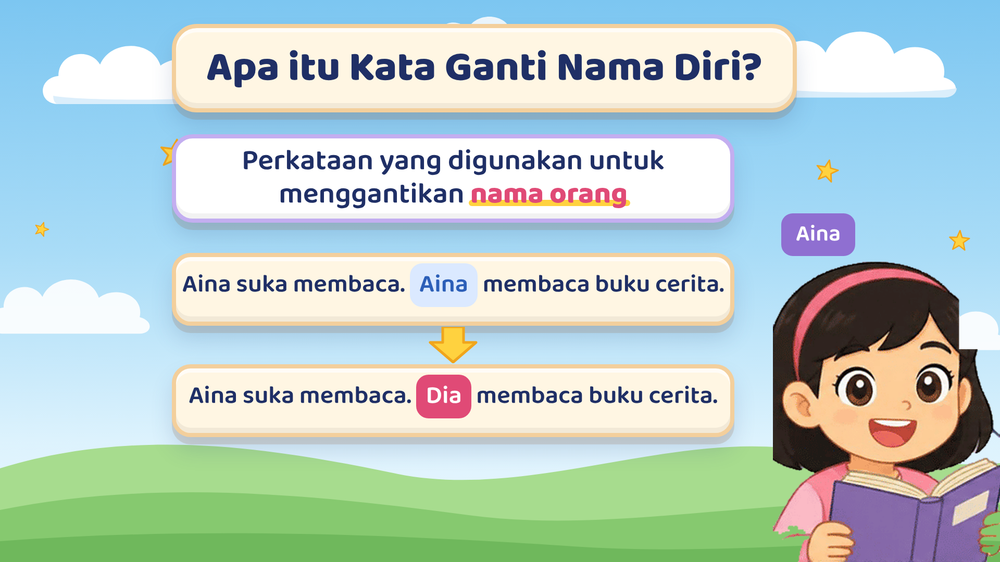
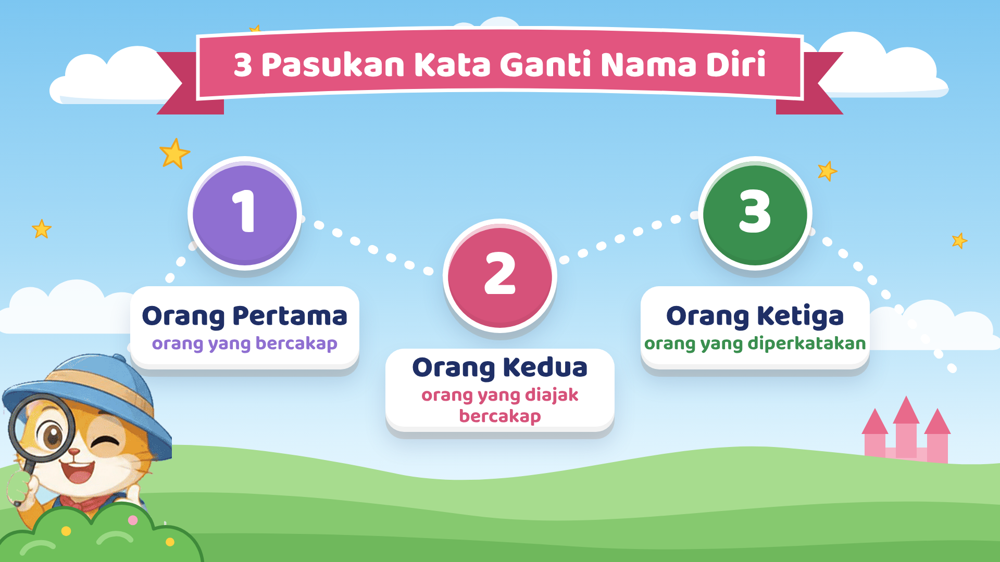
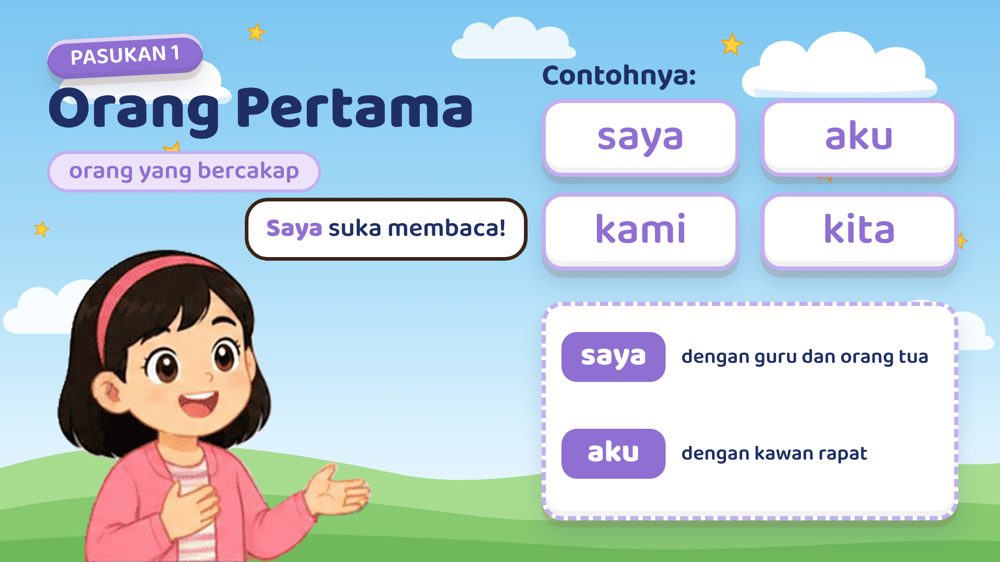
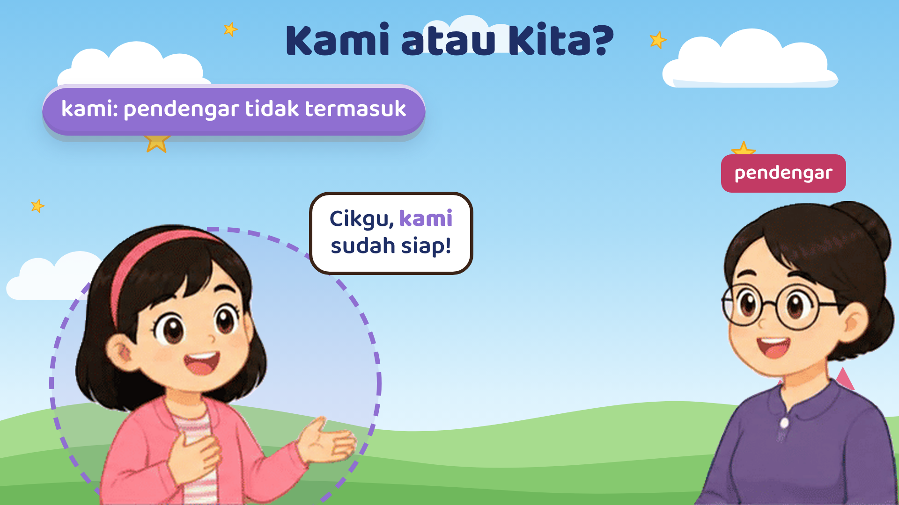
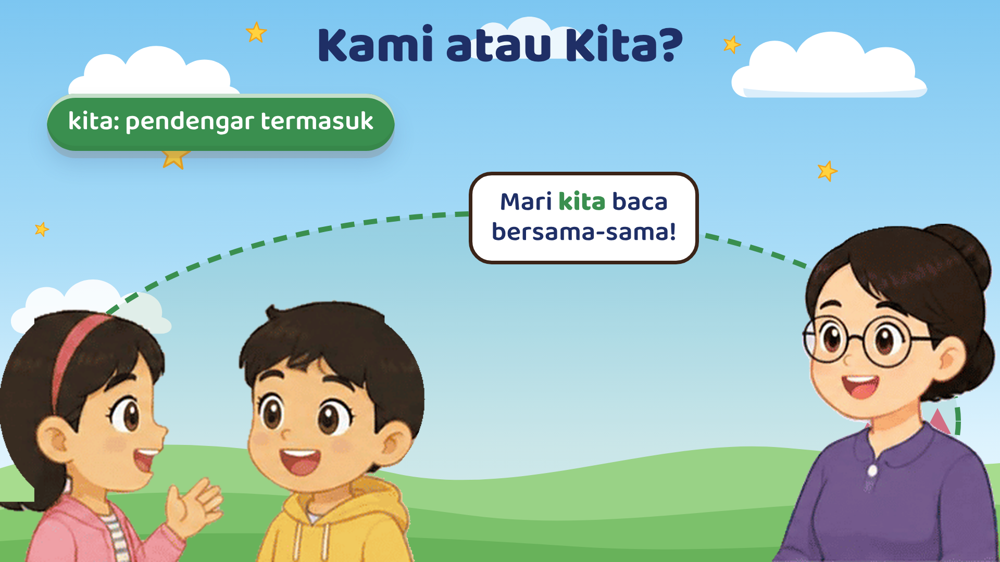
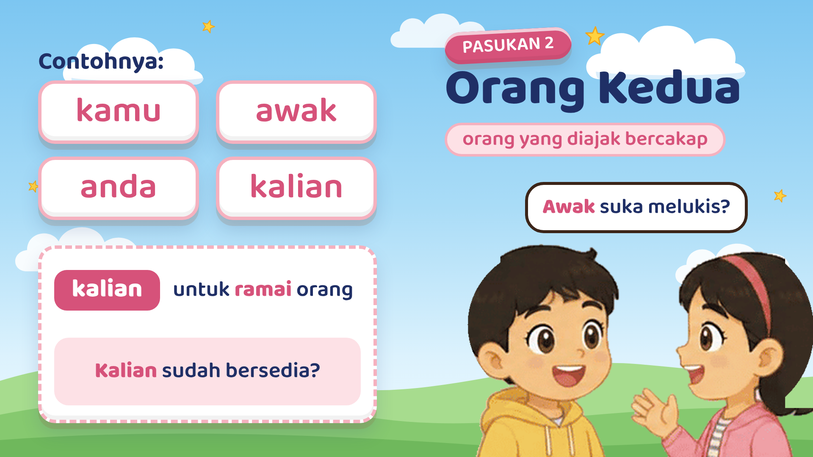
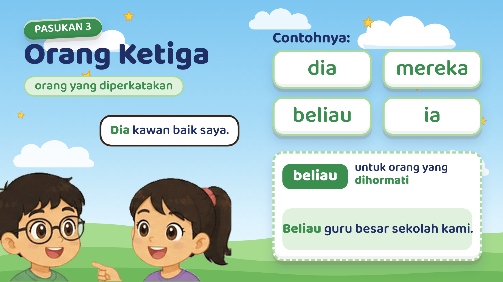
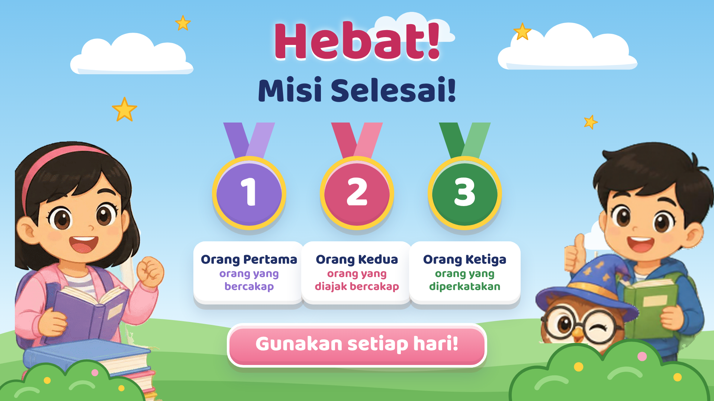

Misi Kata Ganti Nama Diri: storyboard draf
60 saat · 1920×1080 · tanpa kuiz · suara latar lelaki Bahasa Melayu (masa ialah anggaran)

Suara: Hai, murid-murid! Selamat datang ke Misi Kata Ganti Nama Diri. Jom kumpul bintang sambil belajar!
Skrin: tajuk besar di kiri, laluan misi 1-2-3, budak perempuan dan budak lelaki bersama burung hantu di kanan.

Suara: Kata ganti nama diri ialah perkataan yang menggantikan nama orang. Contohnya, Aina suka membaca. Dia membaca buku cerita.
Skrin: definisi; "Aina suka membaca. Aina membaca buku cerita." bertukar menjadi "... Dia membaca buku cerita."

Suara: Kata ganti nama diri terbahagi kepada tiga pasukan. Mari kita kenali satu per satu!
Skrin: laluan misi dengan tiga hentian bernombor; kucing penjelajah memerhati.

Suara: Pasukan pertama ialah orang pertama, iaitu orang yang bercakap. Contohnya saya, aku, kami dan kita. Gunakan saya apabila bercakap dengan guru.
Skrin: budak perempuan berkata "Saya suka membaca!"; perkataan muncul satu-satu; saya (guru dan orang tua) dan aku (kawan rapat).

Suara: Gunakan kami apabila pendengar tidak termasuk.
Skrin: murid berkata "Cikgu, kami sudah siap!"; bulatan ungu mengelilingi murid, cikgu (pendengar) di luar.

Suara: Gunakan kita apabila pendengar turut termasuk.
Skrin: cikgu berkata "Mari kita baca bersama-sama!"; bulatan hijau mengelilingi semua orang.

Suara: Pasukan kedua ialah orang kedua, iaitu orang yang diajak bercakap. Contohnya kamu, awak, anda dan kalian. Kalian untuk ramai orang.
Skrin: "Awak suka melukis?"; contoh "Kalian sudah bersedia?".

Suara: Pasukan ketiga ialah orang ketiga, iaitu orang yang diperkatakan. Contohnya dia, mereka, beliau dan ia. Beliau untuk orang yang dihormati.
Skrin: budak perempuan menunjuk kawannya, "Dia kawan baik saya."; contoh "Beliau guru besar sekolah kami."

Suara: Hebat! Mari kita ingat semula. Orang pertama, orang yang bercakap. Orang kedua, orang yang diajak bercakap. Orang ketiga, orang yang diperkatakan. Misi selesai!
Skrin: tiga pingat (1, 2, 3) berayun masuk satu-satu; "Misi Selesai!" dan butang "Gunakan setiap hari!".